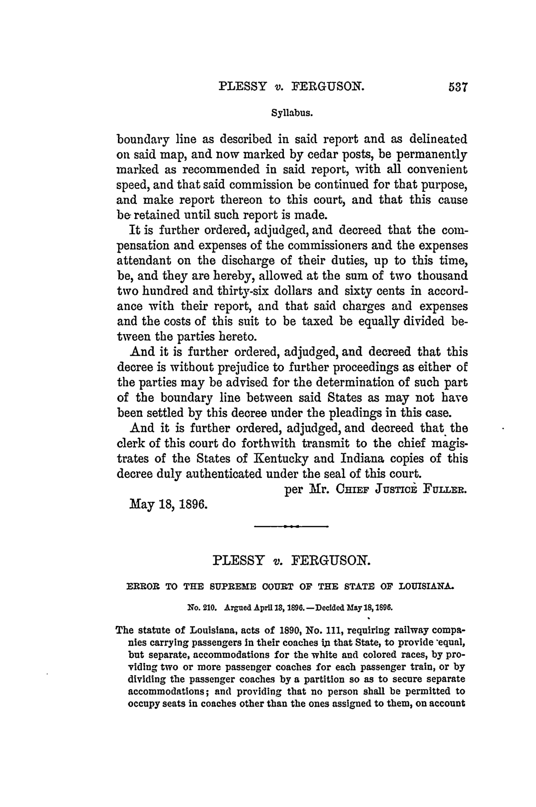

Optima Academy Online
An Education Experience Company
M/J CIVICS
Quarter / Module
Q2 · Module 4
Civil Liberties & Rights
Primary Source
Week 15 · Source 2
Author & Work
Plessy v. Ferguson, 163 U.S. 537 (1896)
Pairs With
Lesson 15.2 · Primary Source Report 15 (Canvas)
Primary Source 2
Plessy v. Ferguson, 163 U.S. 537 (1896)
Read this, then complete Primary Source Report 15 in Canvas.
📖 CONTEXT
This case did not begin with a spontaneous act of discrimination. Homer Plessy, seven-eighths white and one-eighth black, was a member of the Comité des Citoyens, a group of black and Creole activists in New Orleans who deliberately organized a test of Louisiana's 1890 separate-car law, with the cooperation of the East Louisiana Railroad, whose conductor and a hired private detective had both been informed in advance of the plan. The Supreme Court nonetheless upheld the law, ruling that "separate but equal" facilities satisfied the Fourteenth Amendment. Read this majority opinion honestly, as a documented constitutional wrong, alongside Lesson 15.2 and Justice Harlan's lone dissent.

📜 THE TEXT
“We consider the underlying fallacy of the plaintiff's argument to consist in the assumption that the enforced separation of the two races stamps the colored race with a badge of inferiority. If this be so, it is not by reason of anything found in the act, but solely because the colored race chooses to put that construction upon it… The object of the [Fourteenth] amendment was undoubtedly to enforce the absolute equality of the two races before the law, but… it could not have been intended to abolish distinctions based upon color, or to enforce social, as distinguished from political, equality… Legislation is powerless to eradicate racial instincts or to abolish distinctions based upon physical differences.”
(Opinion of the Court, Justice Brown; condensed, public-domain text. Overturned by Brown v. Board of Education, 1954.)
💡 A NOTE ON THIS OPINION
Read the claim that any "badge of inferiority" exists only "because the colored race chooses to put that construction upon it" against what you now know: Plessy's boarding of the railway car was itself a staged test case, arranged in advance with the railroad's cooperation. The Court also draws a sharp line between "political" equality, which it says the Fourteenth Amendment requires, and "social" equality, which it says the Amendment does not touch. Brown's reasoning about public education, in Primary Source 1, answers both claims directly.
➡️ WHAT YOU'LL DO NEXT
1
Primary Source Report 15 (Canvas, Tier 3)
Reread this excerpt alongside Brown v. Board of Education before writing. Quote directly from both sources and include a Works Cited list.
Optima Academy Online · M/J CIVICS · Quarter 2 · Primary Source Page
Week 15 · Plessy v. Ferguson, 163 U.S. 537 (1896)
© Optima Academy Online · An Education Experience Company